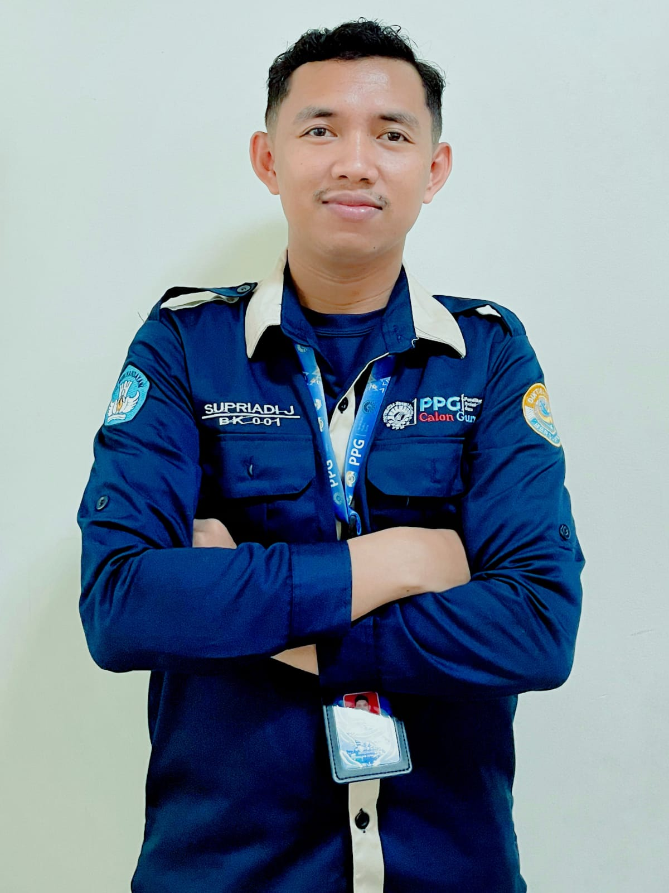

Data Pribadi
- Nama Lengkap
- Supriadi .J, S.Pd
- NIM
- 2590204950888
- Kontak
- 089653828173
- supriadituratea@gmail.com
- Alamat
- Kota Makassar
PPG Calon Guru · Gelombang 1 · 2026
Calon Guru Bimbingan dan Konseling yang bercita-cita menjadi pendidik yang dirindukan, dipercaya, dan menciptakan safe space bagi setiap peserta didik di Kota Makassar.
Peduli, berperan & menciptakan ruang aman untuk bertumbuh

Identitas
Profil akademik dan visi perjalanan PPG calon guru.
Merancang dan mengimplementasikan program bimbingan dan konseling yang menyeluruh (klasikal, kelompok, maupun konseling individual) yang disesuaikan dengan tahap perkembangan peserta didik, termasuk mengintegrasikan Standar Kompetensi Kemandirian Peserta Didik (SKKPD).
Menjalin komunikasi yang hangat dan tanpa menghakimi (unconditional positive regard) dengan peserta didik agar mereka terbuka dalam mengonsultasikan permasalahan pribadi, sosial, maupun akademik.
Bekerja sama secara sinergis dengan guru mata pelajaran, wali kelas, orang tua, dan pihak sekolah untuk memantau perkembangan serta mendeteksi secara dini masalah yang dihadapi peserta didik.
Mengaplikasikan dan mengembangkan pengalaman kerja profesional di sekolah secara konsisten untuk merancang layanan responsif dan perencanaan individual yang adaptif terhadap dinamika serta kebutuhan nyata peserta didik di lapangan.
Setiap anak berhak atas ruang yang aman untuk bertumbuh. Saya ingin menjadi guru BK yang peduli dan berperan — hadir mendampingi, bukan menghakimi — agar setiap peserta didik menemukan potensi dan perannya di sekolah maupun dalam kehidupan.
Refleksi Pembelajaran
Refleksi atas mata kuliah yang ditempuh selama dua semester PPG.
Memaknai hakikat pendidikan sebagai proses memanusiakan manusia dan menanamkan nilai karakter.
Semester 1 Buka Refleksi ↗Menjadi kompas moral saya untuk memposisikan diri sebagai fasilitator yang menuntun, bukan sosok yang mudah memberi label negatif pada siswa pasif. Filosofi ini saya wujudkan dengan mendesain ruang layanan yang aman, interaktif, dan penuh empati agar peserta didik bebas berekspresi tanpa takut dihakimi.
Membangun pola pikir berkembang sebagai fondasi diri guru BK dalam menghadapi tantangan.
Semester 1 Buka Refleksi ↗Membekali saya dengan pemahaman neuroplastisitas bahwa kecerdasan bukanlah takdir baku, melainkan kapasitas yang tumbuh lewat usaha. Pendekatan ini saya aplikasikan melalui pemberian pujian pada proses (process-praise) serta penggunaan media Kartu Janji Sosialku untuk membangun resiliensi mental peserta didik.
Menguasai teknik asesmen (AKPD, dll.) untuk merancang layanan yang tepat sasaran.
Semester 1 Buka Refleksi ↗Mengubah pandangan saya dari sekadar pemberi nasihat menjadi perancang layanan yang bergerak berdasarkan data nyata. Menggunakan instrumen seperti AKPD dan analisis RIASEC, saya mampu merumuskan Rencana Pemberian Layanan (RPL) yang secara akurat menjawab kebutuhan peserta didik di lapangan.
Menyusun program bimbingan dan konseling yang komprehensif dan berkelanjutan di sekolah.
Semester 1 Buka Refleksi ↗Menyadarkan saya bahwa fondasi program bimbingan yang profesional adalah hasil diagnostik yang valid, bukan sekadar asumsi atau kebiasaan lama. Berbekal pemetaan dari angket, saya merancang intervensi layanan yang sistematis dan kekinian melalui pendekatan Deep Learning serta media edukatif yang dekat dengan dunia remaja.
Praktik keterampilan konseling perorangan mulai dari membangun rapport hingga terminasi.
Semester 1 Buka Refleksi ↗Menggeser kebiasaan lama saya dari sekadar pendengar menjadi praktisi yang terstruktur lewat pendekatan Behavioral dan Reality Therapy. Melalui penerapan tahapan WDEP dan lembar kontrak perilaku, saya kini lebih terampil membimbing konseli untuk merumuskan rencana aksi mandiri yang terukur.
Praktik pengalaman lapangan saat siklus layanan masih dibimbing oleh guru pamong dan dosen.
Semester 1 Buka Refleksi ↗Menjadi jembatan transformatif yang menghubungkan teori ideal dengan dinamika nyata saat mengelola kelas besar. Berkat umpan balik Guru Pamong, saya belajar mematangkan manajemen waktu, menyederhanakan instruksi kegiatan, serta merancang administrasi layanan secara inovatif melalui e-portfolio digital tanpa kertas.
Mengintegrasikan kesadaran diri, empati, dan keterampilan sosial emosional dalam layanan.
Semester 2 Buka Refleksi ↗Membekali saya pentingnya mengelola regulasi emosi diri sendiri sebelum menghadapi dinamika dan krisis di dalam kelas. Penerapannya saya wujudkan melalui penggunaan teknik komunikasi asertif (I-Message) serta menciptakan kesepakatan kelas yang suportif demi membangun hubungan kepedulian (caring relationship).
Praktik memfasilitasi dinamika kelompok untuk membantu peserta didik saling mendukung.
Semester 2 Buka Refleksi ↗Mengajarkan saya bahwa sesi kelompok yang sukses berawal dari proses penyaringan (screening) yang ketat serta kemampuan memvalidasi kecemasan awal siswa, bukan sekadar mengumpulkan anak bermasalah secara acak. Hal ini saya terapkan dengan menciptakan iklim yang aman dan menggunakan teknik linking untuk membangun kohesivitas kelompok.
Keterlibatan orang tua sebagai mitra dalam menyelesaikan permasalahan konseli.
Semester 2 Buka Refleksi ↗Menyadarkan saya bahwa perilaku "nakal" siswa di sekolah seringkali merupakan cerminan dari dinamika keluarga yang bermasalah. Berbekal pemahaman cultural humility dan pemetaan spiritual, saya kini lebih terlatih melihat masalah secara holistik dan mengedepankan pendekatan berbasis kekuatan (strength-based approach).
Mengembangkan kapasitas kepemimpinan guru BK dalam menggerakkan perubahan di sekolah.
Semester 2 Buka Refleksi ↗Memperluas peran saya untuk tidak hanya mendampingi di dalam kelas, tetapi juga merancang inisiatif sosial dan bimbingan solutif berbasis asesmen kebutuhan. Melalui perancangan projek EWAKONS, saya belajar menerapkan konsep kepemimpinan kolaboratif dan teori psikologi resiliensi untuk membantu kelompok sasaran membangun ketangguhan mental.
Praktik pengalaman lapangan secara menyeluruh dalam merancang dan melaksanakan layanan BK.
Semester 2 Buka Refleksi ↗Mengintegrasikan seluruh teori bimbingan ke dalam praksis madrasah secara menyeluruh dan berbasis data melalui rangkaian asesmen serta profil kelas. Pengalaman ini mengubah pola kerja saya dari yang tadinya reaktif menjadi praktisi yang proaktif, preventif, dan mengutamakan rasa aman psikologis bagi siswa.
Perjalanan Bertumbuh
Perubahan persepsi dan pencapaian selama mengikuti program PPG.
Sebelum PPG, saya telah berkarier sebagai guru BK honorer — dari mendampingi anak didik di LPKA Kelas II Maros hingga mengabdi di SMA Kartika XX-I Makassar. Berbekal pengalaman lapangan, saya melayani dengan seadanya: memberi nasihat, menangani kasus, dan menyusun kegiatan tanpa pijakan asesmen yang kuat. Ada kerinduan menjadi lebih profesional, tetapi saya merasa praktik saya masih bergerak dari intuisi, bukan dari data.
“Saya ingin layanan BK tidak lagi bergerak dari intuisi, tetapi dari pemahaman yang utuh tentang peserta didik.”
PPG mengubah cara pandang saya secara fundamental. Melalui asesmen (AKPD, RIASEC), konseling individual dan kelompok, hingga PPL pada siklus pertama sampai kedua, saya belajar bahwa layanan yang berdampak lahir dari data dan relasi, bukan instruksi. Refleksi kritis di setiap siklus, umpan balik guru pamong, serta projek kepemimpinan EWAKONS menuntun saya menjadi praktisi yang proaktif, preventif, dan menghadirkan rasa aman psikologis bagi peserta didik.
“PPL mengajarkan bahwa mendengar dengan empati lebih kuat daripada memberi nasihat.”
Kini saya berdiri sebagai guru BK yang reflektif dan percaya diri: mampu merancang program berbasis asesmen, mengelola layanan di dalam maupun luar kelas, serta menggerakkan kolaborasi dengan keluarga dan guru. Pengalaman PPG menjadi fondasi untuk terus bertumbuh — menghadirkan layanan yang inklusif, humanis, dan benar-benar dirasakan manfaatnya oleh peserta didik.
“Berbekal pengalaman PPG, saya siap menghadirkan layanan BK yang inklusif, humanis, dan berkarakter.”
Produk Kreatif
Inovasi layanan BK berbasis digital yang dikembangkan selama PPG — sebagian dapat diakses langsung.
Aplikasi asesmen kebutuhan peserta didik berbasis web dengan analisis otomatis. Hasil asesmen langsung terpetakan tanpa pengolahan manual, siap digunakan guru BK di madrasah.
Segera hadirInstrumen digital untuk mengukur tingkat kepuasan peserta didik terhadap layanan BK, dilengkapi rekapitulasi dan visualisasi hasil secara otomatis.
Buka aplikasiMedia layanan bimbingan klasikal berbasis permainan bertema “Lolos dari Ruang Malas”. Peserta didik (kelas IX MTsN 1 Kota Makassar) memecahkan sandi di tiap pos untuk menguatkan literasi kesehatan mental dan strategi belajar, lengkap dengan poin, bintang, dan batas waktu.
Buka aplikasiBukti Karya
Dokumen dan bukti kegiatan yang mendukung capaian pembelajaran.
Dokumentasi
Momen praktik layanan BK selama PPL. Klik foto untuk melihat lebih besar.
Klik foto untuk melihat lebih besar · Dokumentasi PPL 1 Siklus 1–3.
Praktik Pengalaman Lapangan
Siklus layanan BK dari terbimbing menuju mandiri. Klik siklus untuk melihat detail RPLBK.
Layanan dibimbing guru pamong dan dosen pembimbing lapangan.
+ Refleksi Akhir PPL 1
Praktik layanan secara mandiri di sekolah tempat praktik.
Rangkuman refleksi atas keseluruhan praktik PPL 1 dan PPL 2 pada akhir program.
Best practice disusun dengan metode STAR — Situasi, Tantangan, Aksi, Refleksi.
Rencana keberlanjutan pengembangan kompetensi dan layanan BK setelah lulus PPG.
Terhubung
Siap belajar dan berkontribusi. Terhubung untuk berbagi praktik baik layanan BK.
“Aku dan Peranku di Sekolah”
Dokumen pendukung